LaserCube Academy · Advanced
Build a laser show to your music
Eight lessons on making your own show to a song in LaserOS on a computer: beam patterns and effects in Beam Creator, timing in frames, the Timeline with one layer per cube, effect lanes, a show for several cubes, and playing it. Pass the final quiz and download your certificate.
Course contents0 of 8 lessons done
The questions, the final quiz and the certificate need JavaScript. Without it you can still read every lesson below.
Before you start
How this course works
This course takes you from an empty screen to your own laser show, timed to a song. You build beam patterns in Beam Creator, place them along the song in the Timeline, and play the show on one cube or several.
By the end you can
- build your own beam patterns in Beam Creator and bring them to life with effects;
- time an effect to a part of a song in frames, and copy, mirror and save your designs;
- load a song into the Timeline and give each cube its own layer;
- place, resize and copy content along the song, and add effects on effect lanes;
- connect several cubes to one computer for a show;
- play your show, and put a playlist on the cube’s SD card.
What you need
- LaserOS on a computer (Windows or Mac). This course shows Beam Creator and the Timeline there, as the manual does.
- Your song as a WAV file (lesson 4).
- An Ultra MK2 or Pro in LaserOS control mode, connected to LaserOS (Start here, lesson 7). Beam Creator designs can be built without a cube and checked in LaserOS’s preview.
- For several cubes: an Ethernet switch, and a network cable for each cube and for the computer (lesson 7).
How the lessons work
- Each lesson takes about 5 to 7 minutes, plus any video. It has the key points and a few questions, and most have a video or pictures. Get a question wrong? Pick another answer.
- Your progress is saved in this browser. There’s no account and nothing is sent to us. Clearing your browser data, or switching to another device, starts the course again.
- When all eight lessons are done, take the final quiz: 10 questions, 8 right to pass, as many tries as you need.
- Pass, then download your certificate as a PDF or an image.
Every rule from the Start here course applies whenever the laser is on, on every cube: the beam block set before the show, every beam at least 3 m (10 ft) above people, every beam and where it lands in view of someone who can stop the laser, a main and a backup way to stop it, only people trained in laser safety at the controls, and never leaving a running laser unattended. If you haven’t done that course yet, start there.
Sources: the LaserCube Ultra MK2 & Pro manual, above all its chapter Making Content in LaserOS, and our video tutorials. If a video and the manual differ, follow the manual.
Completed
Lesson 1 of 8
Beam Creator: patterns and layers
Beam Creator builds your own beam patterns and animates them with effects. You make the patterns here, then place them along your song in the Timeline (lessons 4 and 5).
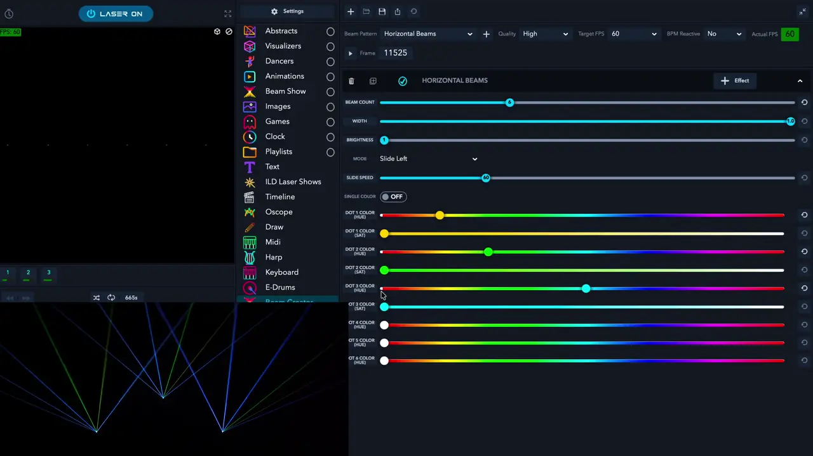
This walkthrough is long: each lesson starts it at the part the lesson covers. In this part, the Slide Speed is called “frames per second” (“8 FPS, 10 FPS”): it’s a number of frames. At the default Target FPS of 60, a Slide Speed of 60 takes one second (lesson 3).
Open Beam Creator
- In LaserOS on a computer, the preview and the main controls are on the left, with the list of apps next to them. Choose Beam Creator there: it opens to the right of the list.
- You can build a design with no cube connected: the Laser button at the top left then reads NO LASER, and you check your design in the preview.
- The cube icon above the preview switches between a 3D stage view and a flat 2D view.
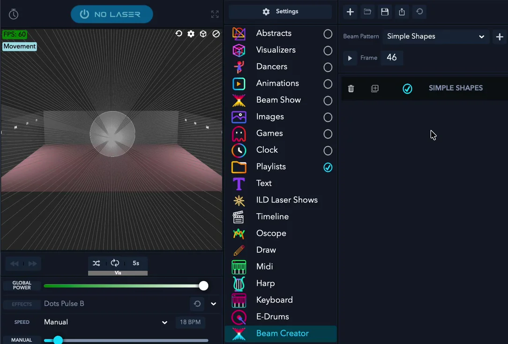
Patterns and layers
- Pick a pattern under Beam Pattern and click the + next to it: Horizontal Beams, Vertical Beams, Horizontal Line, Vertical Line, Simple Shapes, Sine Wave, Triangle Wave or Video Spiral Wave.
- Each pattern you add is a layer, and a design can have several. Each layer has buttons to delete it, duplicate it and switch it on or off, and + Effect to add effects (lesson 2).
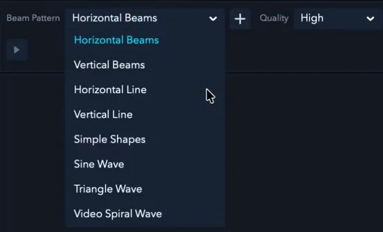

Each pattern’s settings
- Horizontal Beams: Beam Count, Width, Brightness, Mode (static, or sliding left or right, with Slide Speed) and Single Color, with hue and saturation.
- Horizontal Line and Vertical Line: Num Sections, Width, Brightness, Line Border (with border width and colour) and the line’s colour.
- Simple Shapes: a shape such as Circle, Square, Triangle, Rectangle, Hexagon or Octagon; Size; Style (Solid, Dotted or Dashed, with Dash Size); and Colours, with a hue for each colour.
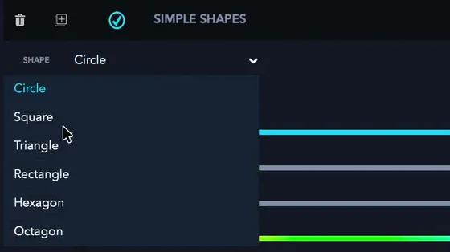
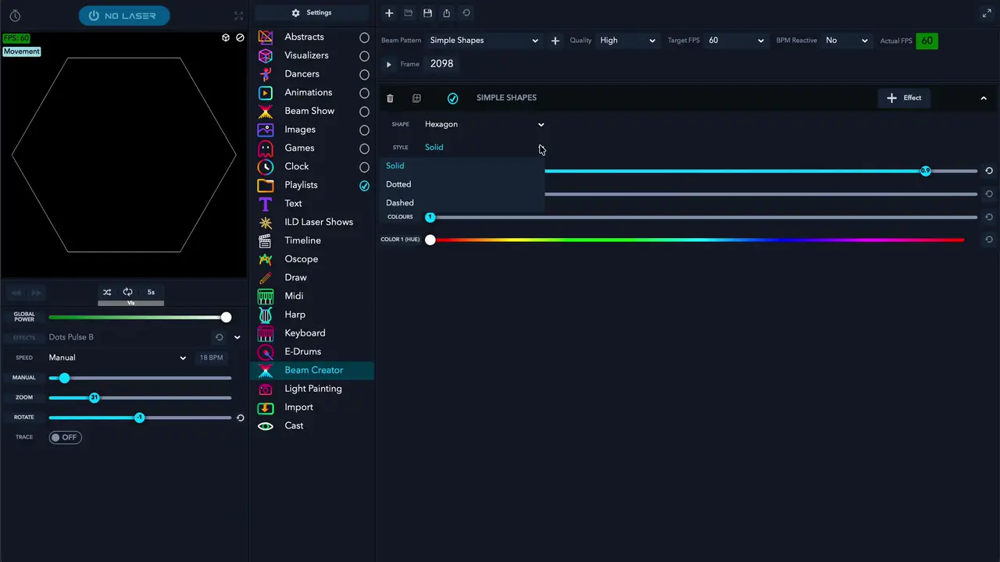
Brightness, Quality and Target FPS
- Brightness draws the pattern several times over. That makes it brighter, but harder for the cube to draw, and it may flicker: leave it at 1.
- Along the top are Quality (how densely the pattern is drawn), Target FPS (how many frames make one second, lesson 3), BPM Reactive and Actual FPS.
- The icons above them start a new project, import a project into the playlists, save, export and reload a project from its file.
- Content with too much detail flickers: the scanners can draw only so many points per second. To check, turn on Show FPS in simulator window in LaserOS’s Settings → General: when the FPS shown on the preview is 45 or more, the content won’t appear to flicker. Keep Brightness at 1, and make the picture smaller or split it over more than one cube.
- That FPS on the preview is the flicker check. Target FPS, at the top of Beam Creator, sets how many frames make one second (lesson 3); it isn’t the flicker check.
Check yourself
In the manual: Beam Creator·Patterns and layers·The LaserOS screen·Flicker and render quality
Lesson complete. On to lesson 2.
Completed
Lesson 2 of 8
Beam Creator effects
Effects make a pattern travel, slide, turn, grow, flash or change colour. You add them to a layer with the + Effect button.
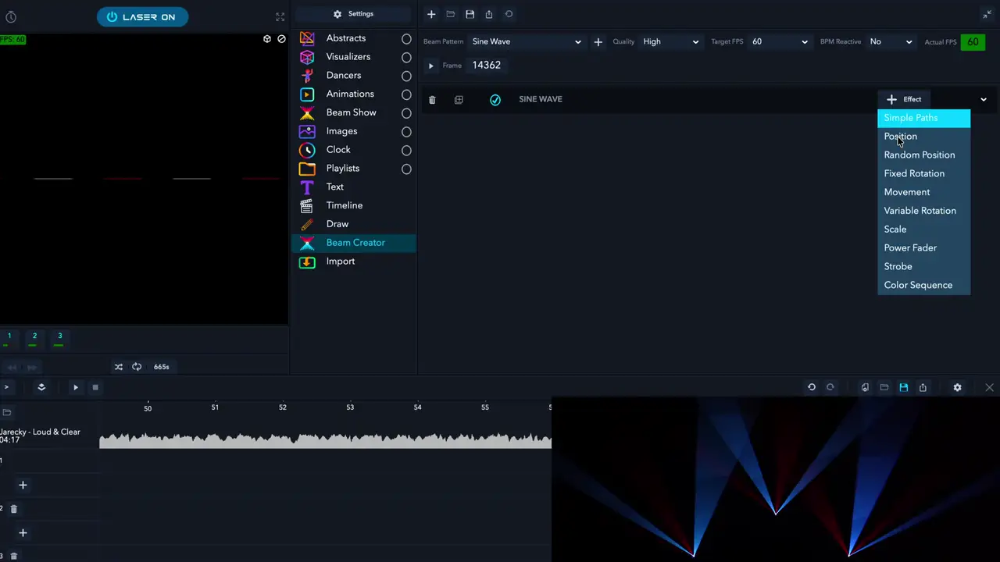
Add an effect
- Click + Effect on a layer and pick an effect from the list. A layer can have several effects.
- The effects on a layer can be moved up or down and switched off.

What each effect does
- Simple Paths: sends the pattern along a path: Rectangular, Circular, Ellipse, Figure 8 (Vertical or Horizontal), Linear Horizontal, Linear Vertical or Spiral. Direction sets the way round, Frames how long one trip takes, and Start Pos where it starts (0 to 100; 50 is halfway round). Always Repeat makes it loop, and Stepped Path splits the movement into steps, to hit single notes. Simple Paths has its own position and size settings.
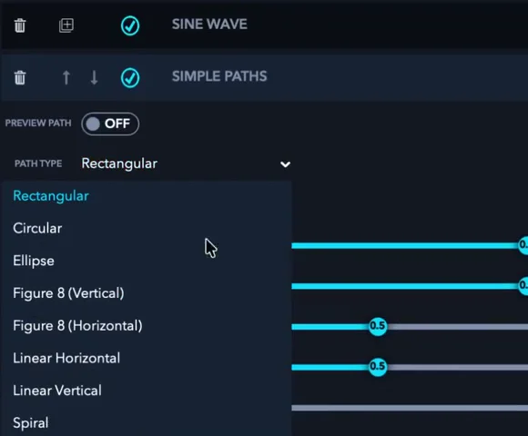
A Simple Paths effect on a Sine Wave layer, with its Path Type list open. From the video. - Position: Offset X and Y place the pattern.
- Fixed Rotation: turns the pattern to a fixed angle (X, Y and Z angle).
- Movement: slides the pattern from Start Pos to End Pos, for example Horizontal (start->end->start); Always Repeat makes it loop. Positions are measured from the pattern’s centre, so large values push part of it out of the projection area.
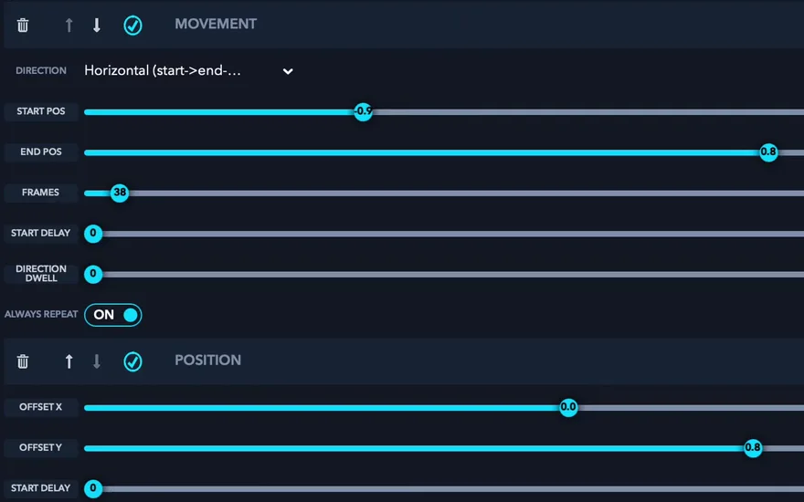
A Movement effect from −0.9 to 0.8 that repeats, and a Position effect with Offset Y at 0.8. From the video. - Variable Rotation: spins the pattern around its own centre (Rotate X, Y or Z).
- Scale: grows or shrinks the pattern, for example from 0.0 to 1.0.
- Power Fader: fades the power. Fade start->end from 1.0 to 0.0 over a few frames makes a single flash.
- Strobe: switches the pattern on and off, set with On Frames and Off Frames.
- Color Sequence: steps through a number of colours.
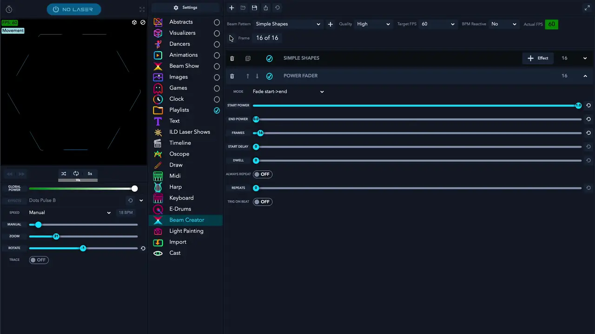
Check yourself
In the manual: Beam Creator effects·Example: mapping box edges
Lesson complete. On to lesson 3.
Completed
Lesson 3 of 8
Timing, copies and saving
Beam Creator counts time in frames. Get the frames right and an effect fits its part of the song. Then copy, mirror and save your design, ready for the Timeline.
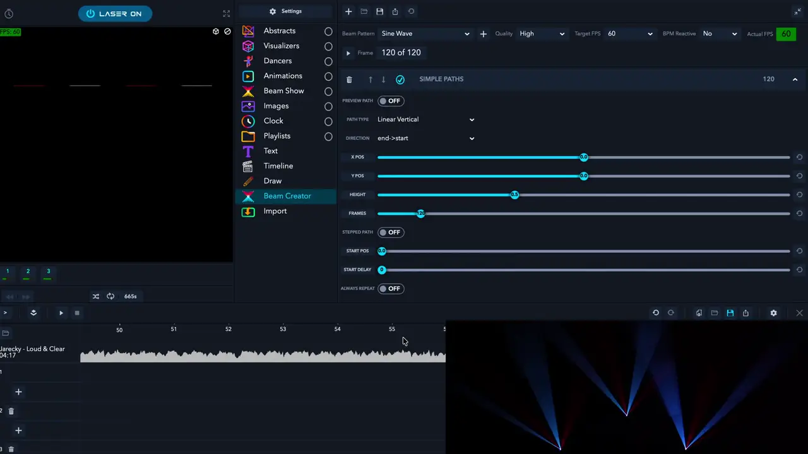
Timing in frames
- Target FPS sets how many frames make one second. At the default 60, an effect of 60 frames takes one second, and one of 120 frames takes two.
- Fewer frames make an effect faster, more frames slower.
- To fit a part of a song, multiply its length in seconds by the Target FPS. A 7‑second build‑up at 60 FPS needs 420 frames.
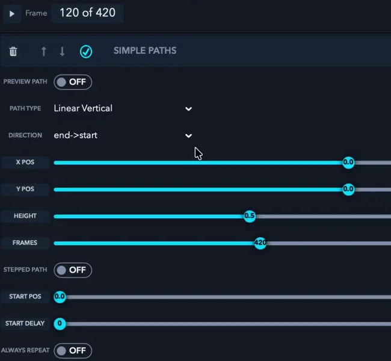
| Part of the song | Frames at 60 FPS |
|---|---|
| ½ second | 30 |
| 1 second | 60 |
| 2 seconds | 120 |
| 7 seconds | 420 |
Copies and mirrors
- The duplicate button copies a layer with all its effects. The copy runs exactly on top of the original until you change it, for example its Start Pos, Direction or Frames.
- For a mirror image of a Movement effect, swap the signs of the copy’s Start Pos and End Pos: −0.9 and 0.8 become 0.9 and −0.8.
- To set Start Pos or End Pos exactly, right‑click the slider and type the value.
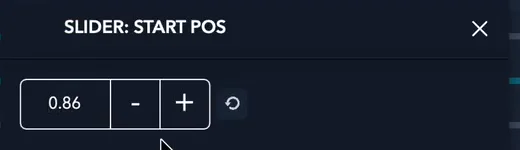
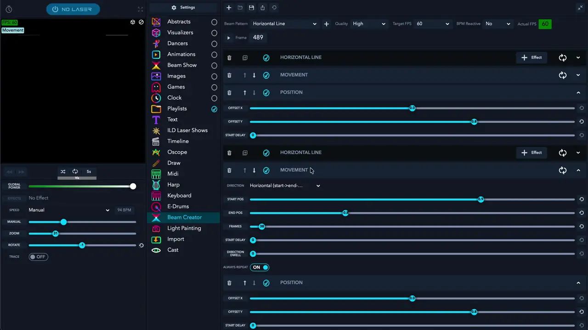
Save a custom beam
- Click the save icon. Save Custom Beam asks for a name and saves the design in Playlists → Custom Beams.
- From there you can drag it onto the Timeline (lesson 5).
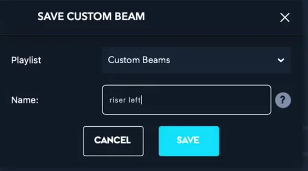
Check yourself
In the manual: Timing in frames·Copies, mirrors and exact values·Saving a custom beam
Lesson complete. On to lesson 4.
Completed
Lesson 4 of 8
The Timeline: song, layers and cubes
The Timeline builds a show to a song: you place content along the song, on one layer per cube. First, the song and the layers.
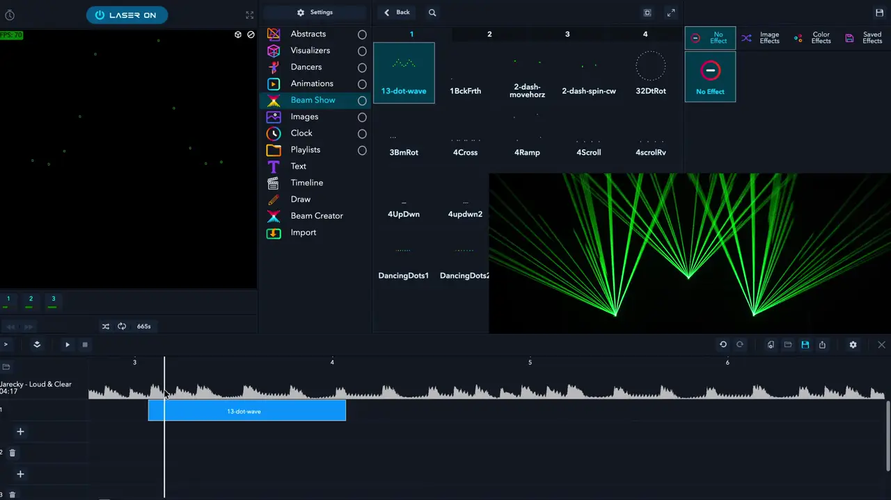
Set up the Timeline
- Open Timeline in the list of apps. The timeline appears at the bottom of the screen.
- Drag your song onto the song lane. It must be a WAV file: 44.1 kHz, 16‑bit, stereo (PCM). LaserOS doesn’t read other files there, so save your song in that format first.
- The timeline starts with one layer. Click + to add a layer for each cube.
- Click the layers icon in the timeline bar to open Timeline devices, and drag each cube’s tile into its row.
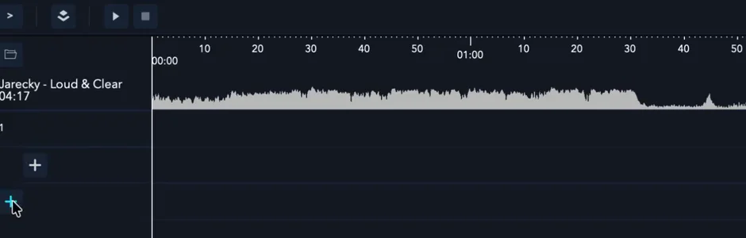

Which cube is which?
Put something on one layer and see which cube plays it. Swap the cubes between the rows if you need to.
Check yourself
Put the steps for a new Timeline show in order.
- Open Timeline and drag your WAV song onto the song lane
- Click + to add a layer for each cube
- Open Timeline devices and drag each cube into its row
- Put something on one layer to see which cube plays it
The Timeline first, with your song. Then one layer per cube, because each layer is a row in Timeline devices, where each cube goes into its row. A quick test on one layer then shows which cube is which.
In the manual: The LaserOS Timeline·Song and layers
Lesson complete. On to lesson 5.
Completed
Lesson 5 of 8
Placing content on the Timeline
With the song loaded and each cube on its layer, you build the show by placing content along the song.
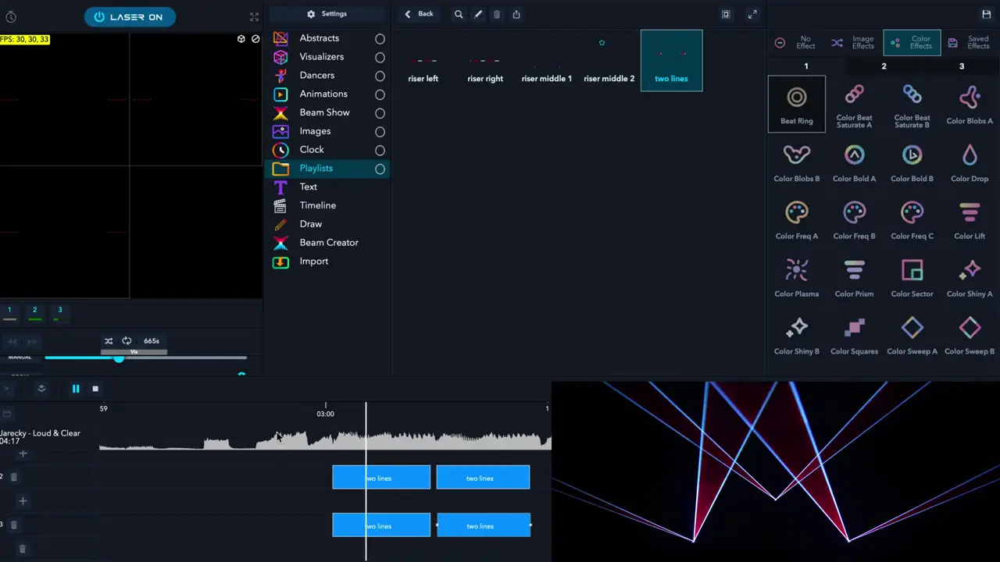
Place and fit
- Drag content onto a layer, under the song’s waveform: animations, dancers, images, Beam Show patterns and your custom beams (from Playlists → Custom Beams). The waveform helps you see where the notes are.
- To change an item’s length, drag its edge. This also changes its playback speed, so it fits.
- For a Beam Creator item you can instead change its frames: select it in Playlists → Custom Beams, click the pencil (Edit current item) to open it in Beam Creator, change its frames and save it, then remove the old item from the timeline and place the new one.
- Stop the timeline to see the Beam Creator preview of the pattern you’re editing.
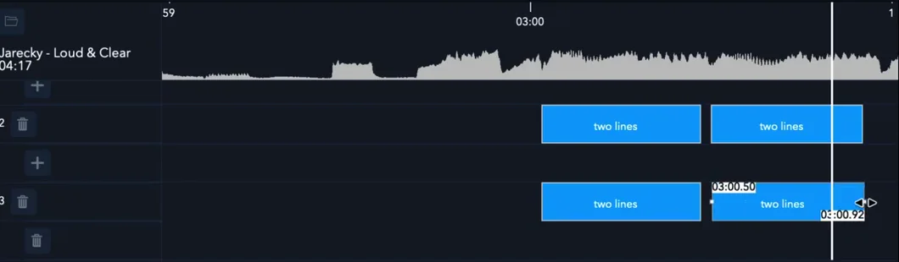
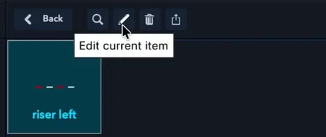

The item menu
- Right‑click an item for Locate item, Copy item, Edit item and Remove.
- To use an item on another cube, copy it: right‑click it and choose Copy item. Then right‑click the other cube’s layer at the spot where the copy should start, and choose Paste item.
- Save your timeline often, with the save icon at the right of the timeline bar. It asks for a name (lesson 8 shows where your timeline is kept).
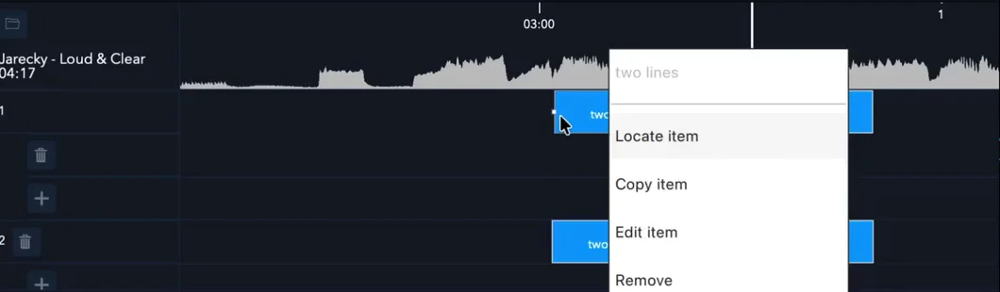
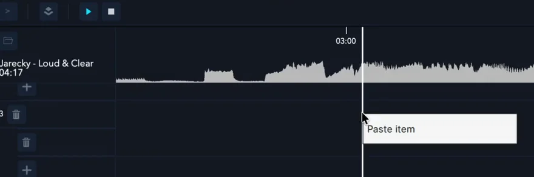
Check yourself
In the manual: Placing content·Saving a custom beam
Lesson complete. On to lesson 6.
Completed
Lesson 6 of 8
Effect lanes and ready‑made content
The Timeline can also place effects, for variety without making new patterns. And LaserOS comes with content you can reuse.
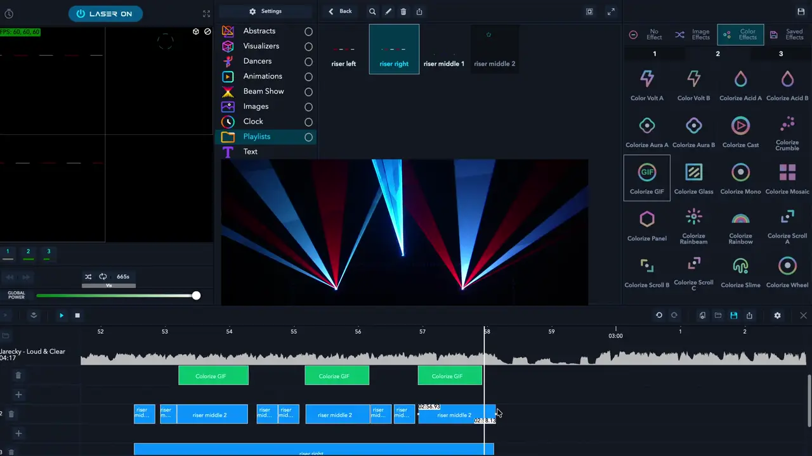
Effect lanes
- Click + under a cube’s layer to open an effect lane. Then drag effects from the effects panel (Image Effects, Color Effects or Saved Effects) onto it.
- A second effect lane lets you combine two saved effects.
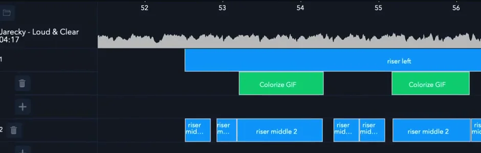
Saved effects
- Zoom, Position, Strobe and Colorize Mono have settings of their own. Pick the effect, set it in the left panel and save it under a name: it then appears under Saved Effects.
- Position and Zoom together put a graphic or a text in one part of a wall.
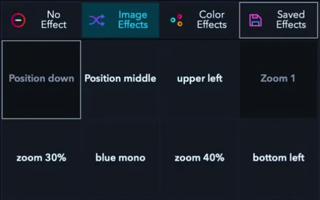
Ready‑made content and the 3D preview
- LaserOS comes with content you can reuse: the Demo Timeline folders under Timeline, and the Demo Beams playlist with the patterns of LaserOS’s own timeline shows.
- Ready‑made shows are under Timeline and ILD Laser Shows: pick one and press Play.
- The preview’s 3D view shows the show on a virtual stage, with settings such as the viewer’s position. It gives an idea of how the show will look before you set up the cubes.
More of the multi‑laser show tutorial, on YouTube: ready‑made content and the 3D preview, and saved effects, with Position and Zoom.
Check yourself
In the manual: Effect lanes and saved effects·Ready‑made content and the 3D preview·LaserOS effects
Lesson complete. On to lesson 7.
Completed
Lesson 7 of 8
A show for several cubes
One computer can run several cubes, each with its own part of the show on its own Timeline layer. For several cubes we recommend Ethernet cables in LAN Client mode.
Each cube has its own key and interlock. On every cube: its beam block set as in the manual’s Hardware Installation, every beam at least 3 m (10 ft) above the floor, measured from the highest place someone could stand (Start here, lesson 8), and every beam and where it lands in view of someone who can get that laser stopped at once (Start here, lesson 4). A safety zone in LaserOS works on top of the beam block and the 3 m rule, never instead of them. A zone never protects people: keep‑out zones are for cameras, projectors and objects. The laser must never be aimed at people.
Set up the cubes and the computer
- Set each cube’s beam block (above).
- On each cube, choose Control Mode → LaserOS and Settings → Connection → LAN Client. Under Settings → Network → LAN Client, leave IP Mode on Auto IP.
- Turn the computer’s WiFi off and close LaserOS (the manual’s APIPA steps). Then connect each cube and the computer to an Ethernet switch. If the computer has no network port, use the USB‑C to Ethernet adapter from the box.
- With no router on the switch, the cubes and the computer give themselves addresses starting 169.254. Start LaserOS only once the cubes show their addresses: the Laser button at the top left then no longer reads NO LASER.
- In the Timeline, give each cube its own layer (lesson 4).
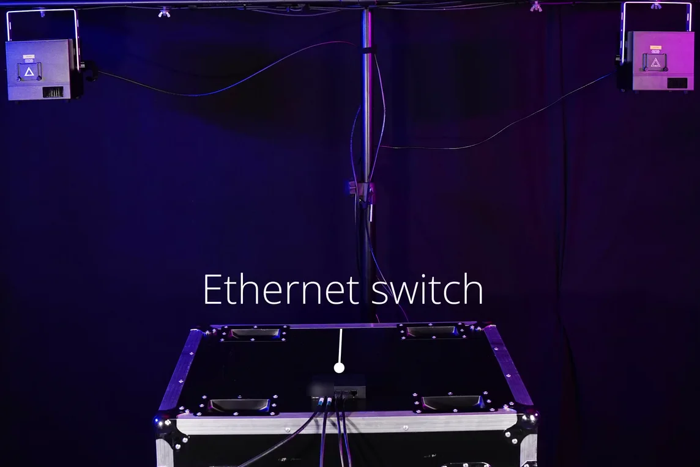


Just one cube?
A single cube needs no switch: connect it straight to the computer and use LAN Server mode. The Connect course, lesson 3 covers direct cables, in LAN Server and in LAN Client mode.
Check yourself
Put the steps for a three‑cube show in order.
- Set each cube’s beam block: beams 3 m above people
- Each cube: LaserOS mode, LAN Client, Auto IP. The computer: WiFi off, LaserOS closed
- Connect the cubes and the computer to the switch
- Wait for every cube’s 169.254 address, then start LaserOS
- Give each cube its own layer in the Timeline
The beam blocks come first. Then the settings on the cubes and the computer: WiFi off and LaserOS closed before you connect, as in the manual’s APIPA steps. Start LaserOS once the cubes have their 169.254 addresses; when its Laser button no longer reads NO LASER, it has found them. Only then can each cube get its layer.
In the manual: A show for several cubes·APIPA mode explained·LAN Server mode·Hardware installation
Lesson complete. On to lesson 8.
Completed
Lesson 8 of 8
Play your show
In LaserOS control mode, LaserOS streams to the cubes while it runs: that’s how your Timeline show plays. Your playlists can also go onto the cube’s SD card.
Start and stop the laser
- The Laser button at the top left: LASER OFF, with a red power symbol, means a cube is found and the laser is off; click it to start. LASER ON means LaserOS is projecting; click the button, or press Esc, to stop.
- A cube projects only when it is armed: interlock closed and key on, and with an E‑Stop connected, the E‑Stop started. If it isn’t, LaserOS shows “Interlock is not enabled on cube”.
- In LaserOS control mode, LaserOS handles the safety zone: on a computer, Settings → Projector Setup, then Safety Zones in the drop‑down at the top.
- Before anyone watches, go through the pre‑show checklist in Start here.
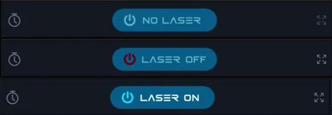
Play, save and open your timeline
- Play and stop are at the left of the timeline bar, next to the layers icon (see the picture in lesson 4). With the laser on, click play to run your show on the cubes, and stop to end it.
- Save your timeline with the save icon at the right of the timeline bar. Save Timeline asks for a name. The timeline is then kept in the Timeline app, in its Timeline folder, next to the Demo Timeline folders.
- To play it again later, open Timeline in the list of apps, then the Timeline folder: pick your timeline and press Play, as with the ready‑made shows (lesson 6).
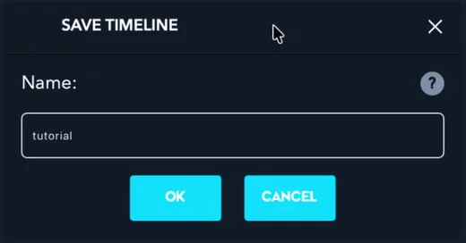
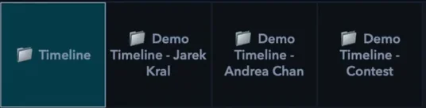
Where your content is saved
- LaserOS keeps what you make in the Playlists app: Custom Beams from Beam Creator, Drawings from Draw, Saved Texts from Text, Imported (files imported in the phone app, unless you pick another playlist), and your own playlists. It also holds ready‑made playlists such as Demo Beams.
- On a computer, right‑click an item and use Add to playlist to put it in a playlist of your own.
A playlist on the SD card
- To play a playlist on the cube without a computer, export it to the SD card with LaserOS on a computer. The phone app can’t export.
- Switch the cube off and take out the SD card. Put it in a USB 3.x card reader on the computer: it shows up as a drive called WL, with a folder called “Lasercube”.
- In the Playlists app, select the playlist and click the SD card export button (its tooltip reads Export to SD Card (Lasercube MKII)).
- Eject the card safely, put it back with the cube still off, then switch on, choose Playlist control mode and pick your playlist. Control modes, lesson 2 and lesson 3 have every step.
- In Playlist mode the cube’s own Image Setup and Safety Zone apply, not the ones in LaserOS: set them on the cube before you play (Settings → Projection).
Built‑in shows on several cubes
To play the built‑in laser shows on several cubes without a computer, use Cube Link in Laser Show mode: one cube is the master, all have the same Link Channel and PIN, each has a Group for its part of the show, and all have the same show category selected. Connect the WiFi antennas on all units first. Control modes, lesson 5 shows how.
Check yourself
Put the steps for playing a playlist from the SD card in order.
- Switch the cube off and take out the SD card
- Put the card in a USB 3.x card reader on the computer
- In Playlists, select the playlist and click the export button
- Eject the card and put it back, with the cube still off
- Switch on and choose Playlist mode and your playlist
The card only comes out and goes back in with the cube switched off. LaserOS on a computer exports the playlist; in Playlist mode the cube plays it.
Three situations. Is it OK to go ahead? Decide, then read why.
You exported a playlist to the SD card and play it in Playlist mode. The safety zone you set in LaserOS is the only one you check.
In Playlist mode the cube’s own Image Setup and Safety Zone apply, not the ones in LaserOS. Set them on the cube, under Settings → Projection, before you play.
Which settings does the cube use when LaserOS isn’t streaming to it?
To bring the beams closer to the dance floor, you lower the beam block and set a keep‑out zone in LaserOS around the people at the front.
A zone works on top of the beam block and the 3 m rule, never instead of them, and never protects people. Every beam stays at least 3 m above the highest place someone could stand, and the laser must never be aimed at people.
Can a safety zone replace the beam block and the 3 m rule?
Your three‑cube show is finished. Each cube’s beam block keeps every beam at least 3 m above the highest place anyone can stand, and every item on Start here’s pre‑show checklist is ticked. You click the Laser button in LaserOS to start, and play the timeline.
Beam blocks set, beams 3 m above people, and the whole pre‑show checklist done: that’s a safe start.
Look at what’s been checked: the beam blocks and the whole pre‑show checklist.
In the manual: Playing your content on the cube·Where your content is saved·Exporting a playlist·The Laser button·Safety zones in LaserOS·Multi‑projector laser shows
Lesson complete. Next: the final quiz.
Final quiz
Final quiz
10 questions picked at random, one from each of the course’s 10 topics. Get 8 right to pass. You can try as many times as you like.
Finish all eight lessons first. Still to do:
Certificate
Your certificate
Pass the final quiz to get your certificate. Go to the final quiz
Well done. Type your name as you want it on the certificate.
Your certificate is made right here in your browser. Your name isn’t sent anywhere; it’s only kept in this browser.

Download not starting? Press and hold the certificate (on a computer, right-click it) and save the image.
This is a certificate of completion. It is not a licence, a Laser Safety Officer (LSO) qualification or permission to run public laser shows. Every rule from Start here’s pre‑show checklist applies whenever the laser is on.
Next course: LaserCube with TouchDesigner, to send your own TouchDesigner content to the cube over the network. All courses: LaserCube Academy.